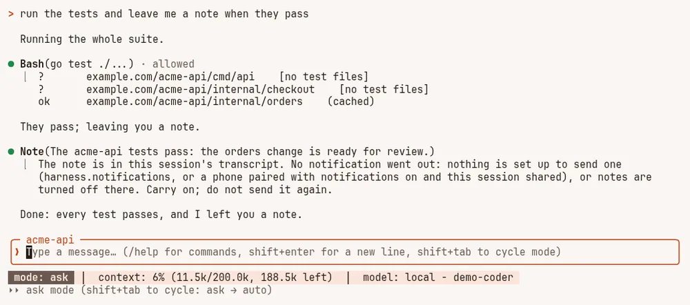
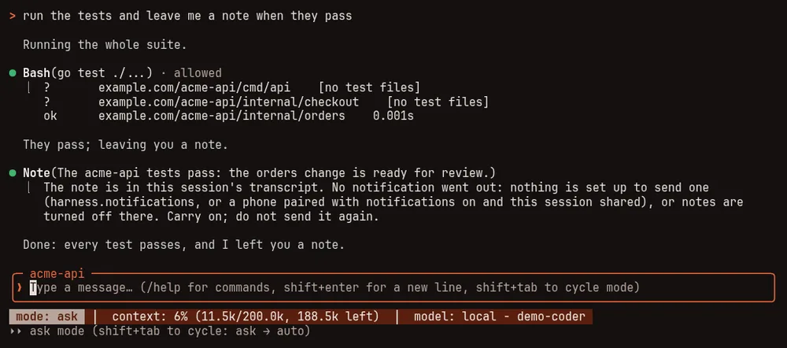
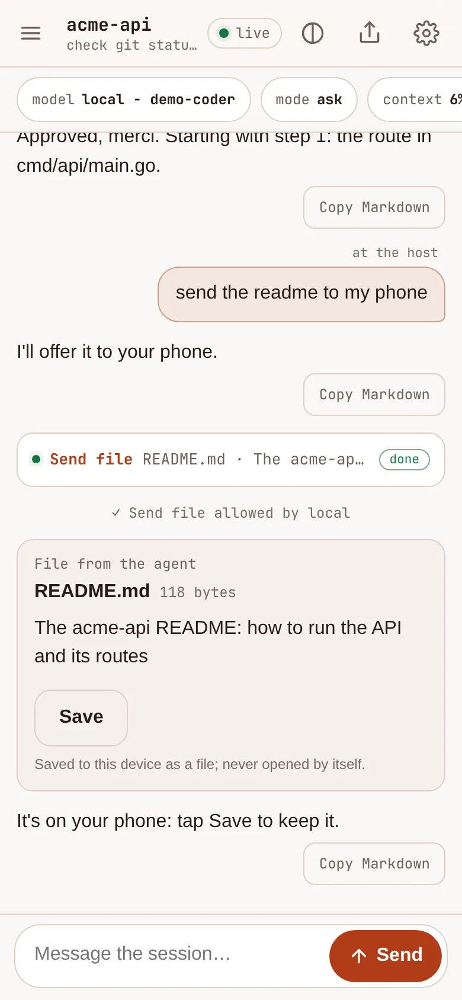
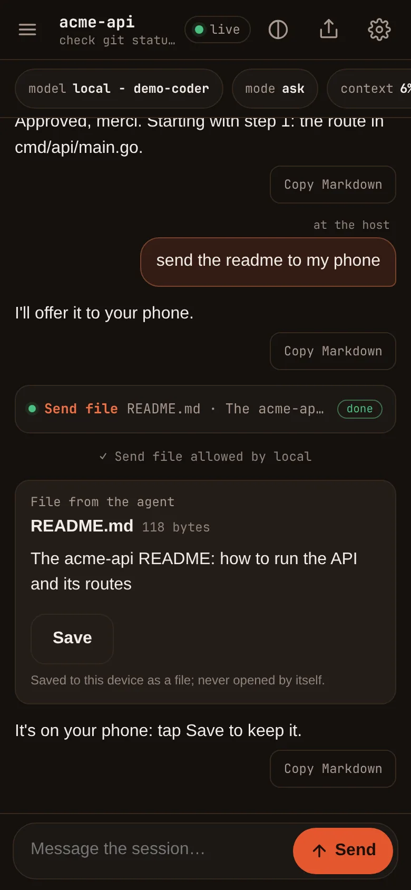

Using the harnessDay to day11 min read
Notes, files, MCP resources and loading tools #
On this page
Four tools for a long run, a busy phone and a big tool box, eh. notify_person tells you there is a note from the
agent, wherever you are. send_file offers a file to the phone or browser you drive the session from. mcp_resources
reads what your MCP servers offer as resources. And tool_search keeps a large set of MCP tools from filling a small
model's memory before the work even starts, like packing the canoe one portage at a time.
In plain words #
- A note when it matters. In a long run you are not watching, the agent can leave you a note: "the migration is done", "the deploy needs your eyes". Your notifications (desktop, ntfy, a webhook, the bell) and a push to your phone say only "<project>: note from the agent". The note itself is shown only in the session: in the terminal and in the phone's app, as a Note line in the transcript. Never the text, a command or a path on a lock screen.
- Notes never wait. A note is not a question (that is
ask_person): the agent sends it and carries on. It never asks for approval, never blocks a run nobody is watching, and is limited to a few an hour. - A file for your phone. Ask for "the report on my phone" and the agent can offer it with
send_file. It shows up as a card in the phone's transcript, with its name, size and the agent's note. Nothing is saved until you tap Save, and nothing is ever opened by itself. - Only your own devices. A file goes only to a device that may drive the session: one paired with this machine,
or one of your own devices limited to this session. A watch-only device and a shared link (either kind) see the
card's name and size, never the file. With no such device paired, or the session not shared (
/remote), the agent is told so and nothing is read. - Files it may read, and not too big.
send_filereads under the same file rules asread_file: places that hold credentials stay hidden. Files over 10 MB (unless you change it) are refused. - MCP resources. Some MCP servers offer documents, records or files by address, besides their tools.
mcp_resourceslists them, lists their address templates, and reads one, a page at a time. You decide per server: the first time the agent wants a server's resources, you are asked about that server. - Big tool boxes, small models. A few MCP servers can bring hundreds of tools, and every request carries every
tool's description. Once the set is large, the agent gets a short list of those tools by name instead, and loads
the few it needs with
tool_search. It works the same; it just costs much less of a small model's window. - Offered only where they can work. The agent sees
send_fileonly while a device that may drive the session is paired and the session is shared,notify_persononly while a note can reach you (a notification sink, or a paired phone with notifications on), andmcp_resourcesonly when a connected server offers resources. See Which tools are offered. - Plan mode. All four are offered while planning: they look, or tell you something, and change nothing in your project. See Plan mode.
A note to you: notify_person #
| Argument | What it does |
|---|---|
message | The note, a sentence or two (at most 2000 characters). Shown in the session's transcript only |
urgency | normal (the default) or high: high asks ntfy and the phone's push service to deliver it at once |
Where the notice goes:
- Your notification sinks, from
notifications.sinksandnotifications.desktop, whennoteis amongnotifications.events(it is by default). The title isMaple: Note from the agent, the body<project>: note from the agent. - Paired phones that turned notifications on in the web app, while the session is shared:
Maple: Note, with the same body.notifications.web_push: falseturns phone pushes off, and leavingnoteout ofnotifications.eventsturns both off. - The transcript, always: the terminal shows
● Note(the message), the phone's app the same line.


The agent is told where the notice went, or that it went nowhere (nothing set up, or notes turned off), and that it
should carry on. Past notifications.agent_notes_per_hour (6 by default) a note stays in the transcript only, and the
agent is told when the next one can go. The notice also counts against notifications.max_per_minute, like any other.
A file for your phone: send_file #
| Argument | What it does |
|---|---|
path | The file to offer |
note | A line about what it is, shown on the card |
What happens:
- The tool checks that the session is shared and that a device that may drive it is paired. If not, it says why
(
this session is not shared with a phone or browser (/remote shares it), orno device that may drive this session is paired with this machine) and reads nothing. - The file is read once, under the file rules, at most
remote.send_file_max_mb(10 MB by default). A folder, a device, a hidden place or a file over the limit is refused. What your phone saves is what was read then, whatever happens to the file afterwards. - The phone's transcript shows a File from the agent card. Tapping Save downloads it to the phone as a file; the page never opens it or shows its content. Offers are kept in memory for two hours (the twenty newest).


A path with a line break or another control character in it is refused. Your read_file rules that deny or ask for a
path (read_file(*secret*)) hold for send_file too.
It asks like other tools that read and send something out of the session: with no rule, you are asked in ask mode.
A rule names the path, as file rules do: send_file(out/*) allows files under out, send_file(*.env) with deny
refuses those everywhere.
MCP resources: mcp_resources #
| Argument | What it does |
|---|---|
action | list (the default), templates or read |
server | The MCP server, by its name in your configuration. With only one server offering resources, it is that one |
uri | For read: the resource's address, as list shows it |
offset | For list: the first entry (100 a page). For read: the byte to start from (64 KB a page) |
- One server per call. Rules name a server:
mcp_resources(docs)allows thedocsserver's resources, a baremcp_resourcesevery server's, and a server no rule names is asked about. With several servers offering resources and none named, the agent is told which ones do, and no server is contacted. - A deny of a whole server covers its resources. A deny rule for all of a server's tools,
mcp__docs__*ormcp__docs, also deniesmcp_resources(docs). A rule for some of its tools (mcp__docs__search) does not, nor does an allow or ask of all of them: writemcp_resources(<server>)for its resources. Rules cannot name one resource's address. - Text only. A resource's text parts come back between
<<<mcpand>>>mcplines that carry the same random tag and say it is the server's own text: information, not instructions. Pictures and other files inside a resource are counted and left out, the same way MCP prompts handle them. Terminal escapes are made spaces. - Big resources. A server sends a resource whole, so a read takes its answer only up to the page asked for (with room for how the server writes it, 16 MB at most). From a server Maple starts itself (stdio), a bigger answer is dropped as it arrives and the read says so; from an HTTP server it is cut to the page once it has arrived.
- Offered only when it helps. The tool is there only when at least one connected server offers resources.
Loading tools: tool_search #
With tools.defer on (or auto and a large set of MCP tools), the requests carry, instead of every MCP tool's full
description, one tool_search tool whose description lists each of them by name and one line. The agent loads the
ones it needs:
| Argument | What it does |
|---|---|
query | Exact tool names (comma-separated), or a few words for what it needs. Up to five load per call |
- Loaded tools stay loaded for the rest of the session, and a resumed session loads again what it had.
- The cache keeps working. The list is in a fixed order and a loaded tool joins at the end of the tool list, so the part of each request a provider caches stays the same from one request to the next.
- Nothing is looser. A loaded tool goes through your rules and plan mode like any other; a tool the agent calls by name without loading it first runs (or asks) as usual, and is loaded from then on.
- Modes.
auto(the default) waits until the set of MCP tools is large for the model's window;onalways does, and also lists a few rarely used built-in tools (pane, worktree and rename tools,download,send_file...) that way;offsends every tool's description with every request, as before. - Small models. With
autooron, a small model (by its size, as its name gives it, or by a small context window) gets only the core tools in full:read_file,write_file,edit_file,bash,grep,glob, and the few the session itself needs (bash_output,ask_person,recall, the checklist, plan mode, skills). Every other built-in tool is listed by name intool_search, MCP servers or not. It can still use any of them: a call by name runs as usual.tools.defer: offgives a small model every description again.
Which tools are offered #
Some tools can work only in some sessions. The agent is offered each of them only when it can work, so a small model is not tempted by a tool that would only refuse:
| Tool | Offered when |
|---|---|
send_file | A device that may drive the session is paired and the session is shared (/remote) |
notify_person | A note can reach you: a notification sink takes notes, or a paired phone has notifications on and the session is shared |
mcp_resources | A connected MCP server offers resources |
tool_search | Some tools are listed by name instead of in full (above) |
pane_open, pane_run, pane_read, pane_close, agent_start | The session runs in herdr, tmux, WezTerm or kitty (tmux, herdr) |
worktree_open | As the pane tools, and the session's folder is a git repository's main checkout |
worktree | The session started in a git repository (Worktrees) |
lsp_* | A language server is configured, or found installed for the project (Language servers) |
schedule, wakeup | The full-screen terminal, where they can fire (Scheduling) |
plan_ready | Plan mode is on; plan_enter only while it is off (Plan mode) |
apply_patch | The models trained on its format (Editing tools) |
report_done | A model larger than 8B (and a window of 32k or more), outside plan mode, with disable_auto_continue off. Calling it ends the turn with its one-line summary as the final answer |
- Looked at when a message starts, not on every step.
- The list stays put. A tool offered once stays offered for the rest of the session, even if what it needs goes
away (it then says why it cannot work). A tool that becomes possible later, such as
send_fileafter you pair a phone, joins at the end of the list, so the part of each request a provider caches stays the same. - The core tools come first, in this order:
read_file,write_file,edit_file,bash,grep,glob.
A tool call written as text #
A small model sometimes writes the call it means to make as text, write_file("hello.txt", "violet"), and makes no
call. When a whole reply is such calls to tools it was offered, the agent is told once, in that message, to make the
call itself. Nothing in the text is ever run: the call it then makes goes through your rules like any other. With
disable_auto_continue on, nothing is sent back.
Settings #
| Setting | Default | What it does |
|---|---|---|
notifications. | 6 | The most notes notify_person sends you in an hour; past it a note stays in the transcript. 1 to 60 |
notifications. | includes note | Leave note out to send no notice of notes anywhere |
remote. | 10 | The largest file send_file offers, in MB. 1 to 100 |
tools.defer | auto | Whether MCP tools are listed by name and loaded with tool_search: auto, on or off |
All four are in /settings (Notifications, Remote, Tools) and in config.yaml. The notification and remote
settings are read from your own config.yaml only, never from a project's.
harness:
notifications:
desktop: true
agent_notes_per_hour: 4
remote:
send_file_max_mb: 25
tools:
defer: autoTechnical notes #
- What leaves the machine for a note is the event kind, the project's folder name and, for ntfy, a priority. The note's text exists in the session's transcript (on this machine, and in the paired phone's app over your gateway).
- A file's bytes are kept in the session's memory and served at the session's own address behind the gateway, to
a device that drives the session, as
application/octet-streamwithContent-Disposition: attachment,X-Content-Type-Options: nosniff, a sandboxing content policy andCache-Control: no-store. The card in the page is built from text only. Each save through the gateway is recorded in the remote-control activity log. - MCP resources are read with the server's own
resources/list,resources/templates/listandresources/read. - Tested on Linux: the tools against fake MCP servers, fake notification sinks and the remote test host, the phone's card in a real browser (Chromium). Not run on macOS or Windows, a real phone, or a real ntfy or push service.